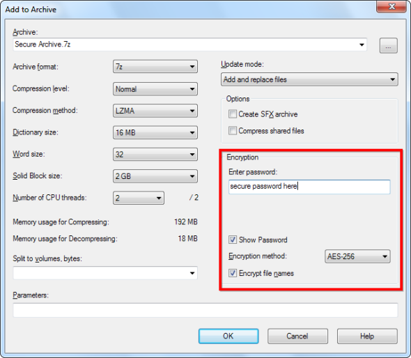
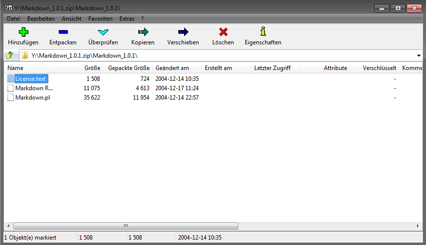

File and Disk Encryption
TrueCrypt
TrueCrypt is a software system for establishing and maintaining an on-the-fly-encrypted volume (data storage device). On-the-fly encryption means that data is automatically encrypted right before it is saved and decrypted right after it is loaded, without any user intervention. No data stored on an encrypted volume can be read (decrypted) without using the correct password/keyfile(s) or correct encryption keys. Entire file systems can be encrypted (e.g., file names, folder names, contents of every file, free space, meta data, etc).
Main features:
- Creates a virtual encrypted disk within a file and mounts it as a real disk.
- Encrypts an entire partition or storage device such as USB flash drive or hard drive.
- Encrypts a partition or drive where Windows is installed (pre-boot authentication).
- Encryption is automatic, real-time (on-the-fly) and transparent.
- Parallelization and pipelining allow data to be read and written as fast as if the drive was not encrypted.
- Encryption can be hardware-accelerated on modern processors.
- Provides plausible deniability, in case an adversary forces you to reveal the password: Hidden volume (steganography) and hidden operating system.
Recommended Options for New Volumes
AES is still considered as unbroken (Dec 2014) but certain government programs have been identified that are aimed at breaking that widely used encryption algorithm. You should use Twofish in combination with AES to be on the safe side. Don't use Serpent as it has been developed to be used in hardware and the software based encryption/decryption is rather slow.
Also change RIPEMD-160 to SHA-256. Read this discussion here if you want to know why.

Above: Recommended encryption options for New TrueCrypt Volumes
No Official Development
In May 2014 the developers of TrueCrypt suddenly closed the website and development putting forward some obscure reasons.
We still recommend using it as it is still considered unbroken and safe. Criminals including the NSA still cannot decrypt TrueCrypt volumes based on two different encryption algorithms and strongs passphrases.
"For reasons that remain a titillating source of hypothesis, intrigue and paranoia, TrueCrypt's developers chose not to graciously turn their beloved creation over to a wider Internet development community, but rather, as has always been their right granted by TrueCrypt's longstanding license, to attempt to kill it off by creating a dramatically neutered 7.2 version that can only be used to view, but no longer to create new, TrueCrypt volumes.""
Read the full story here.
Screenshots

Above: Main window (source: heise.de)
Download
Still available on an alternative site
Price: Free
More Information
For more information visit grc.com
7-Zip
7-Zip is a file archiver with a high compression ratio. The important feature is that 7-Zip allows to encrypt an archive and included file names using AES-256.
7-Zip is open source software. Most of the source code is under the GNU LGPL license. The unRAR code is under a mixed license: GNU LGPL + unRAR restrictions. Check license information here: 7-Zip license. You can use 7-Zip on any computer, including a computer in a commercial organization. You don't need to register or pay for 7-Zip.
The main features of 7-Zip:
- High compression ratio in 7z format with LZMA and LZMA2 compression
- Supported formats: Packing / unpacking: 7z, XZ, BZIP2, GZIP, TAR, ZIP and WIM Unpacking only: ARJ, CAB, CHM, CPIO, CramFS, DEB, DMG, FAT, HFS, ISO, LZH, LZMA, MBR, MSI, NSIS, NTFS, RAR, RPM, SquashFS, UDF, VHD, WIM, XAR and Z.
- Strong AES-256 encryption in 7z and ZIP formats
- Self-extracting capability for 7z format
- Integration with Windows Shell
- Powerful File Manager
- Powerful command line version
- Plugin for FAR Manager
- Localizations for 87 languages
Recommended Options for New Volumes
When creating a new archive options allow to set a password and encryption method. Choose AES-256 and set a strong password with at least 12 characters based on lower and uppercase characters, numbers and symbols. You can choose this service if the scheme you want to use for your password is a secure one.

Above: Encryption options for new archives
Screenshots

Above: Main window
Download
Available on the official website
Price: Free
More Information
For more information visit 7-zip.org